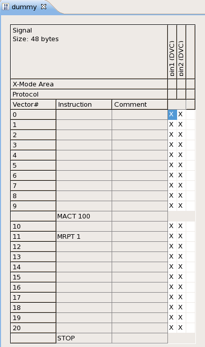
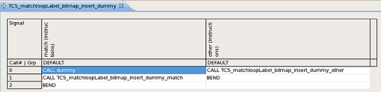

Counted match loops
Match loops are specialized loop constructs in the device access file or program file. Match loops are functionally equivalent to repeat...until loops with an upper limit of how often they can be repeated.
Match loops are used, for example, to put a device into a known state before continuing. For more information about counted match loops in the APG program file, see Loops.
Match loops are supported by the Fast Sync feature. To use the Fast Sync for counted match loops on APG patterns (PPSS labels), you need to insert a dummy counted match loop pattern to the main label at first. Without the dummy pattern, the counted match loops cannot be detected. Therefore, the Fast Sync cannot be applied on the patterns.
The following two figures show how to insert a dummy counted match loop to the main label and the result.

The main label with a dummy counted match loop:

For more information about how to insert counted match loops, see Inserting counted match loops.
Counted match loops without break
Counted match loops begin with the countedMatch(n) statement in the :instruction: column of the device access and end with the matchend statement. The integer number n is the number of times that the loop is executed at the most.
All lines in the device access from countedMatch until matchend are executed during each loop iteration. The loop is always executed at least once.
The loop is repeated until either of the following conditions is true when matchend is encountered:
- The maximum number of loops repetitions (as specified by the n parameter) has been reached.
- The overall pass/fail condition is pass.
If neither of these conditions is true, the execution continues with another loop repetition.
Counted match loops with break
Counted match loops with breaks are similar in all respects to counted match loops without break, with two exceptions:
- The loop begins with the keyword countedMatchWithBreak() instead of countedMatch().
- When the loop is exited because the number of repetitions has been reached, the behavior
depends on the type of match loops:
- For match loops with break, the execution of the remainder of the pattern is stopped.
- For match loops without break, the execution of the pattern continues.
If the loop is exited because of a pass condition, there is no difference between match loops with or without breaks: the execution of the pattern continues after the loop in both cases.
When a counted match loop with break is exited with a fail condition, no reconstruction is possible for the pattern following the match loop because that part of the pattern is not executed.
Limitations and considerations
- Pins used
When counted match loops are used, all of the pins of a port must be contained in the same device access. Otherwise, warning messages will be issued.
- Loops
Device accesses with counted match loops can be used inside for loops. However, the for loops must not be nested too deep.
The actual limit is that counted match loops cannot be used within loops in the compiled pattern that are nested more than three deep. This does not always directly correspond to the nesting level of for loops because for loops may be unrolled during compiling to optimize the pattern.
Therefore, using counted match loops within for loops that are nested more than three deep may lead to compiler errors (if the compiler does not unroll enough of the loops during optimization). If you encounter such errors, you must rearrange your pattern to use less deeply nested for loops.
- Padding
Counted match loops cannot be used in padding routines.
They require a padding routine (specified in the APG pattern file using the :countedMatchPad: keyword) when used with x-modes.
We recommend that this padding routine uses the waveform table that is used with the break vectors to avoid unexpected device responses.
- Maintenance operations (refreshes)
Device accesses containing counted match loops cannot be used in maintenance operations. They also cannot be used in the same test program as maintenance operations.
- DC events
Match loops cannot be used in the same test program as DC events.
- CRC and DBI macros
Counted match loops cannot be used in device accesses that contain either crc or dbi macros.
- X-modes
Counted match loops do not support old-style (non-transparent) x-modes. They fully support transparent x-modes.
Counted match loops require a specific padding setup. This setup is specified in the Device access file using the :countedMatchPad: keyword and selected in the APG pattern file using the :countedMatchPad: keyword.
SmarTest automatically inserts this padding when needed, both before the start of the loop as well as at the end of it.
Note that this padding is used at the end of the loop to align the code with cycle boundaries; it is not used to fill break cycles that the test processor may insert automatically while calculating whether or not to continue the loop.
- Pin ratios
Counted match loops cannot be used in a test program in which a pin ratio other than 1:1 is used. The pin ratio is set with the cycleratio keyword in the Pin mapping file.
- Address reconstruction
Programs with counted match loops can be reconstructed normally. However, cycles within counted match loops cannot be reconstructed.
As a special case, when a counted match loop with break is exited with a fail condition, no reconstruction is possible for the pattern following the loop because that part of the pattern is not executed.
Match loops do not support the -r0 reconstruction option.
- Error data
Cycles executed in match loops do not generate any error data.
- Do not use the counted match loops in the device access file and program file at the same time.
Example
For the device access file:
apgAccess:
{
:name: "MATCH_WRITE_DQ"
:interface: { "xAddr" "yAddr" "DW"}
:table:
{
:format:
{ :instruction: :pin: :states: :data: }
{ countedMatch(10) XADDR { 0 1 } "xaddr(xAddr,yAddr,0)" }
{ "" YADDR { 0 1 } "yaddr(xAddr,yAddr,0)" }
{ "" DATA { 0 1 } "data(DW,xAddr,yAddr,0)" }
{ "" PrgChk { L H } 1 }
{ matchend ~ ~ ~ }
}
}
For the APG program file:
countedMatch (10) // countedMatchWithBreak(n) for counted match loops with a break.
{
MATCH_WRITE_DQ (xAddr, yAddr, DW);
}Functional changes
- Introduced in MTP 2.6.6
- MTP 3.0.3: Additional restrictions introduced for using match loops together with other features.
- MTP 3.3.2: Counted match loops can be used together with HX pins including HSM16G.
- MTP 3.4.0: Support Fast Sync.
- MTP 3.4.1: Support counted match loops in the APG program file.